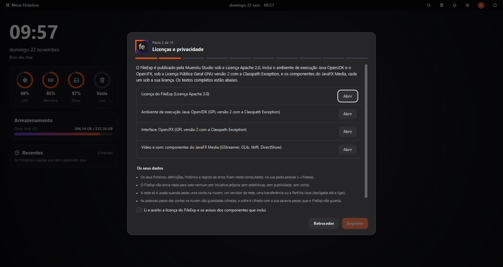
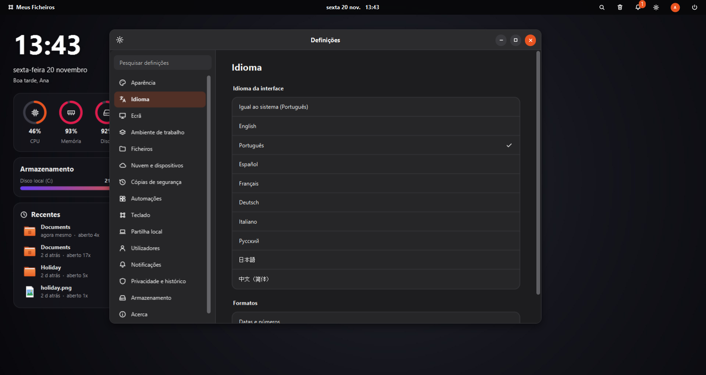

Instalação e primeira execução
Windows#
- Execute
FileExp-3.11.0.exe. - Escolha a pasta (a predefinida serve) e se quer um atalho no ambiente de trabalho. O instalador também adiciona o FileExp ao menu Iniciar.
- Abra o FileExp a partir do menu Iniciar.
Existe também uma versão portátil: a pasta FileExp com FileExp.exe lá dentro. Copie a pasta inteira para qualquer lado (até para uma pen USB) e execute FileExp.exe. Traz o seu próprio Java, por isso não é preciso instalar mais nada.
Linux (Ubuntu, Debian e derivados)#
bashsudo apt install ./fileexp_3.11.0-1_amd64.deb
O FileExp aparece depois no menu de aplicações. No Linux, as pastas do utilizador vêm de ~/.config/user-dirs.dirs, por isso nomes traduzidos como "Transferências" são reconhecidos, e as unidades montadas em /media, /run/media e /mnt aparecem em Computador.
Requisitos#
| Mínimo | |
|---|---|
| Sistema | Windows 10 ou 11 (64 bits), ou um Linux de 64 bits com ambiente gráfico |
| Memória | 4 GB de RAM (o próprio FileExp usa cerca de 200–400 MB) |
| Disco | cerca de 150 MB para a aplicação; os seus dados ocupam poucos MB |
| Java | nenhum — o instalador e a aplicação portátil incluem o seu próprio runtime |
Primeira execução#
- O ecrã inicial mostra o ícone do FileExp, a versão e o estado do carregamento enquanto as suas preferências abrem em segundo plano.
- Da primeira vez abre o assistente de configuração (desde a 3.11), com 10 passos. Funciona todo com o teclado: Tab passa de um controlo ao seguinte, as setas escolhem dentro de um grupo e Enter avança.
| Passo | O que se escolhe |
|---|---|
| 1. Bem-vindo | O idioma (um dos nove) |
| 2. Licenças e privacidade | Ler e aceitar a licença do FileExp e os avisos dos componentes incluídos (obrigatório) |
| 3. Sobre si | O seu nome e a cor da sua imagem |
| 4. Aspeto | Tema, cor de destaque, tamanho do texto, animações |
| 5. Ficheiros | Confirmação antes do Lixo, ficheiros ocultos, miniaturas, tamanho das pastas, atualizar sozinho |
| 6. Privacidade e histórico | Registar o que abre (Mais abertos, Recentes, Linha do tempo), notificações |
| 7. Rede | Ligar a Partilha local, nome deste computador, aceitar sincronizações (tudo desligado por omissão) |
| 8. O FileExp e o seu sistema | Os ficheiros .fexp, .fexc e .fexr abrem no FileExp com o seu ícone (ligado por omissão); "Abrir no FileExp" nas pastas, o comando fileexp no terminal e abrir ao iniciar sessão (desligados por omissão) |
| 9. Vem de outro computador? | Importar uma cópia das definições (.fexp) |
| 10. Tudo pronto | O resumo das escolhas |
Configurar mais tarde fecha o assistente com os valores por omissão. Tudo o que se escolhe pode ser mudado nas Definições, e o assistente pode ser aberto outra vez em Definições › Acerca › Executar o assistente outra vez.
- Aparece o ambiente de trabalho. Abra Meus Ficheiros com o botão à esquerda da barra superior, ou com Ctrl+Space. Da próxima vez, é recebido com um "bem-vindo de volta".

Licenças#
O passo 2 mostra, por inteiro e sem alterações, a licença do FileExp (Licença Apache 2.0), a do ambiente de execução Java OpenJDK e a do OpenJFX (GNU GPL versão 2 com a Classpath Exception) e os avisos dos componentes do JavaFX Media (GStreamer, GLib, libffi, DirectShow). Sem aceitar, o FileExp não continua: Não aceito: fechar o FileExp sai da aplicação. A aceitação (versão e data) fica guardada neste computador; se os documentos mudarem numa versão futura, o FileExp pede-a outra vez, só com esse passo. Os mesmos textos estão sempre em Definições › Acerca › Licenças e avisos legais.
Abrir diretamente uma pasta#
Pode iniciar o FileExp numa determinada pasta indicando-a na linha de comandos:
bashFileExp.exe "D:\Photos\2026"
Escolher o idioma#
O FileExp segue o idioma do seu sistema. Para o mudar, abra Definições › Idioma, escolha um dos nove idiomas e carregue em Reiniciar agora.

Desinstalar#
- Windows: Definições › Aplicações › FileExp › Desinstalar. Os seus dados em
%USERPROFILE%\.fileexp(e o Lixo em%USERPROFILE%\.octopusfile) são mantidos; apague essas pastas se quiser remover tudo (consulte Os seus dados e privacidade). - Linux:
sudo apt remove fileexp.